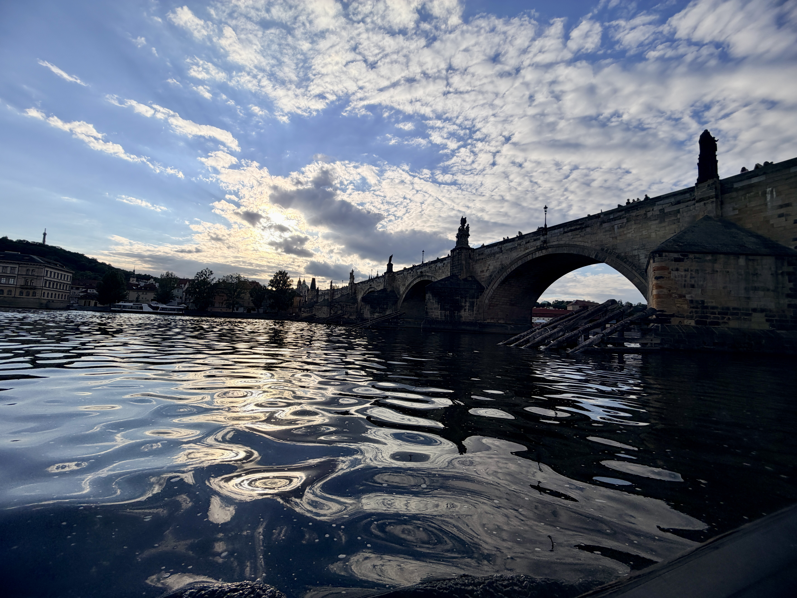

▌ PRAGUE 1200 ／ FINAL CHAPTER ／ P10
DAILY DISTANCE
12.0
km / day
DAILY STEPS
17,000
steps / day
DURATION
120
hrs explored
▶ PROJECT STATUS : COMPLETED
粘曉青・鄭惠文｜布拉格之春 2024

DISCHARGE SUMMARY ／ 結案報告
患者狀況
每日 12 公里、17,000 步的波希米亞極限洗禮，雙腳雖已達極限， 但心靈已完成徹底的淨化與蛻變。
主治醫師醫囑
「這不是終點，
而是下一場浪漫冒險的
臨床準備。」
個人感悟
走得動是福氣，想走就走是底氣。
唯有親自用腳步丈量過，
這座城市的美，
才真正屬於我的靈魂。
🏁
PRAGUE 1200 ／ CASE CLOSED
Prague Spring 2024
粘曉青・鄭惠文 醫師 謹識